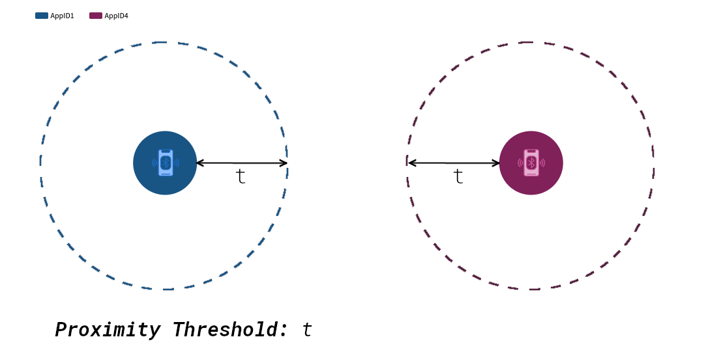
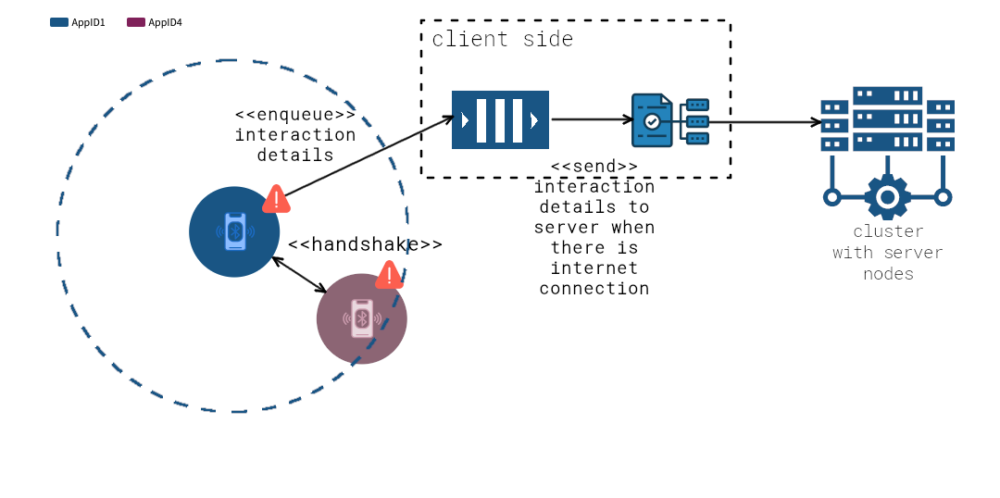
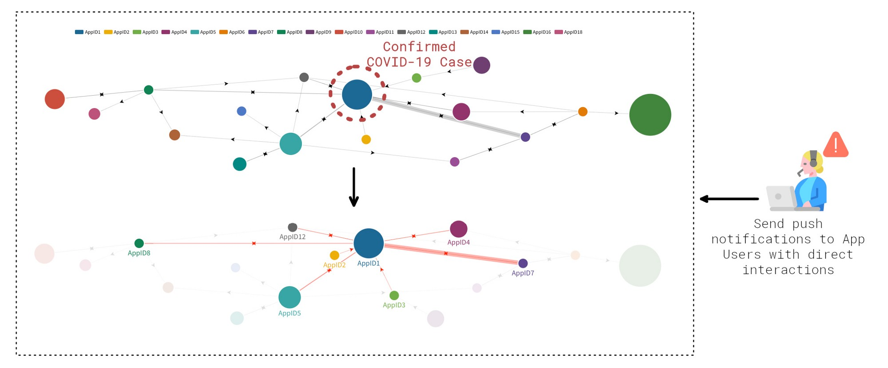
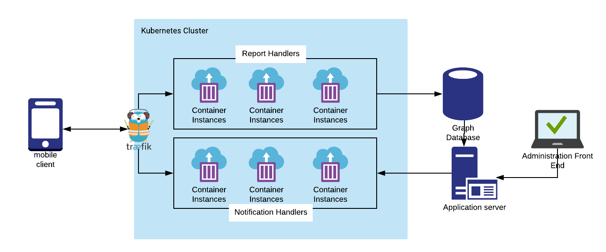

Fighting Back COVID-19 by Building a P2P Mobile Tracer
COVID-19 is spreading at an unprecedented rate all around the globe. Health care systems are experiencing a tremendous amount of pressure and health professionals work on exhausting shifts to deal with the demand. The virus does not distinguish between borders, races, or religion! It is, therefore, our duty to be united and stand up against this highly contagious disease.
The world has already several similar pandemics to COVID-19 however there is a notable difference this time: Mass collaboration, transparency and open discussion were not available at the time! As tech professionals, It has now become possible to voluntarily contribute to fighting the disease, which is exactly what this post is all about.
The Project — P2P Mobile Tracer
High-Level Description
Due to its extreme infectiousness, we know for a fact that it is very difficult to contain the virus at this stage. Instead, the main objective should be to control it as much as possible. Controlling it, however, involves the critical task of tracing any contact of people with confirmed cases with other people which I suspect is an extremely tedious task and involves a lot of recalling and guesswork when done manually.
With that in mind, what if..a mobile application is developed, which uses P2P networking on smartphones using Bluetooth Low Energy technology to create a huge graph of proximity interactions from the users of the application such that it is possible to trace back based on confirmed COVID-19 cases. A more comprehensive technical description is given below.
Technical Description
In order for that to work, it is essential that as many people as possible download the application on their devices and keep Bluetooth active. When the application is downloaded it should run in the background and regularly scanning for other peers nearby.
When another peer is identified within scan range, a ping message is sent to the peer and the interaction is recorded and enqueued for reporting to the server..


On the server-side, the report handler will process the report messages and update a graph database such that a new link is created if there had not been a previous interaction before, or increment a counter to indicate a stronger interaction between the two nodes. As an effect, the administrators of the system, (whoever those may be, government, healthcare IT admins…) can mark nodes which have been tested positive to COVID-19, and hence traceback their interactions based on the interaction graph.
From the illustration below it is apparent, the AppID7 had a strong interaction with the infected person and therefore poses a high risk of infection. Consequently, by receiving the notification, the user of AppID7 can call the corresponding health service and provide his app nonce details to verify his identity and enlist for a COVID-19 test.
Privacy Preservation
It is essential that the user’s ID is not disclosed by the proximity interaction broadcasting. Yet, users must be able to verify their identity when notified that they have been in contact with a confirmed case so that they can sign up for COVID-19 examinations, while at the same time it becomes impossible to report a spoofed notification. i.e. A user reports that he/she has received a notification and needs to be examined asap whereas in reality he/she never received one.
This can be achieved by a cryptographic commitment as the App User ID. More precisely, users should be asked for their passport number when the application is launched for the first time. At the same time, a sequence of random bytes must be sampled from a cryptographically secure PRNG that will act as a nonce. Then a cryptographic commitment will be generated as follows:
C = sha256(passport_number || nonce)
where || is string concatenation.
Commitment C then becomes the App User ID that is used to pseudonymously identify the application with the server.
Additionally, if further identification is needed users can be asked to physically present their passport to verify that they are the legitimate holders the given passport number.
Technology Stack
This section outlines the possible stack of technologies that can be used to build the system.
P2P Listener and Scanner
The P2P functionality can be implemented from scratch but given the urgency of the problem, it is more preferable to use a turnkey solution. In particular, P2PKit provides an out of the box solution for mobile P2P interaction.
Server Side Report Handler
The report handler should be an idempotent HTTP microservice that listens for reports and updates the graph database. This can be built with any web framework but ideally, a lightweight one should be used to reduce unnecessary overhead. A good example is Flask using Python, or even better something with GoLang which is even faster.
Push notification handler
Another HTTP microservice to handle push notifications delivery and responses. Again, can be built with the same technologies as above.
Administration Web Application
This is the interface for the IT administrators to mark nodes as confirmed cases, perform queries, send notifications, verify identities etc. The front end can be built with any javascript front end framework such as Vue, Angular or React and the backend can be built separately again using a web framework such as Flask for Python or Express for Node (JavaScript). As an MVP the database’s visual editor can be used to update nodes manually.
Proximity Graph — Data Layer
Given that the nature of the data is inherently graph-based, using a graph database not only would make queries and data modelling more intuitive, but it would also provide a significant query speed advantage. Personally, I believe that Neo4J is a well-suited candidate since it has been proven to be very reliable, fast and comes with a visual data editor out of the box.
Although this is not a comprehensive list, these are the main software components and their corresponding technologies. Of course, DevOps, infrastructure and orchestration tools need to be employed which would facilitate a robust deployment, high scalability and transparent monitoring. Hence, this section is still open to suggestions.
Below you can find a very high-level architecture of the whole system. Note that there are a couple of components missing such as the databases used to store data apart from the graph data.
Challenges and Limitations
Considering that this is a day’s long idea it is nowhere near a complete and fail-proof system design. As expected there are still open challenges and limitations that need to be reviewed, but this is what open collaboration and discussion are all about right? Here is a list of the challenges that I am currently aware of and need to be considered:
A consensus of which peer must send the report to the server should such that duplicate reports are avoided.
Can this system handle a high volume of report requests?
How fast can queries run if the graph becomes extremely huge?
At what scale can this be deployed? National scale seems sustainable but what about internationally? Data governance becomes an issue in such a case.
Assumptions
In order for the system to be effective, there are some assumptions that must hold:
As many people as possible must have the application downloaded and keep Bluetooth enabled.
People must have an Android or iOS smartphone.
People should allow and read push notifications from the application.
Since all of these depend on external factors, it should be a responsibility of the government to disseminate the above information effectively and encourage people to download the application.
Desirable Improvements
This project describes a system that provides the minimum possible value (albeit impactful) for the given use case. Nevertheless, there are further features that can be implemented. These are the following:
Run even more sophisticated graph algorithms to identify high-risk clusters at more than a single level depth from a confirmed case.
Notify clusters with high proximity interaction with push notifications that provide suggestions to keep distances in order to minimize infection risk.
Use the proximity graph database to investigate and research how the disease spreads amongst populations given the magnitude of close interactions.
Project Development
With Our current time work schedule, it would be a moderate difficult task to build this system . What is more, there are aspects of the system which would involve some learning that will unavoidably require time and effort. Nevertheless we are commited to achieve a workable version as soon as possible.